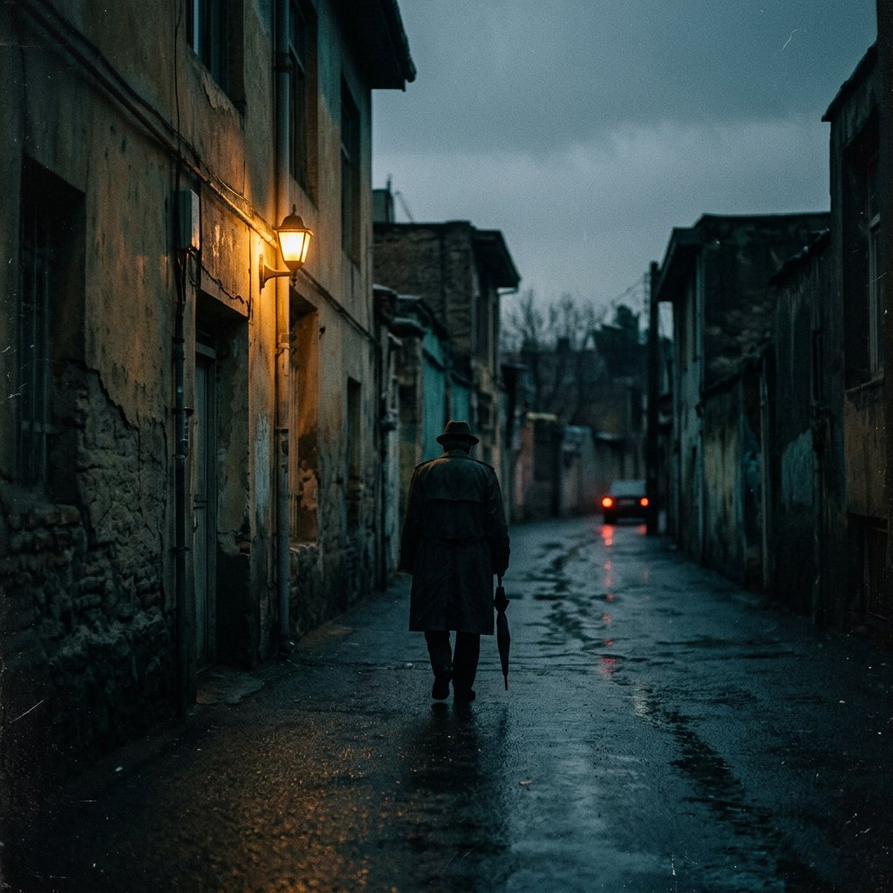

ترانهای برای غروب جمعه
جمعه
فرهاد مهراد
- شعرشهیار قنبری
- آهنگ و تنظیماسفندیار منفردزاده
- سال۱۳۵۰
برای پخش، دکمه را بزن — یا فایل MP3 را روی همین کادر رها کن.
فایل صوتیِ این صفحه به دلیل حق نشر همراه مخزن نیست. برای پخش دائمی، آهنگ را با نام
assets/audio/jomeh.mp3 کنار پروژه بگذارید — یا همین حالا فایل را داخل پخشکننده رها کنید.
متن ترانه
توی قابِ خیسِ این پنجرهها
شهیار قنبری
توی قابِ خیسِ این پنجرهها عکسی از جمعهٔ غمگین میبینم چه سیاهه به تنش رختِ عزا تو چشاش ابرای سنگین میبینم
داره از ابر سیاه خون میچکه جمعهها خون جای بارون میچکه
نفسم درنمیآد، جمعهها سر نمیآد کاش میبستم چشامو، این ازم برنمیآد
داره از ابر سیاه خون میچکه جمعهها خون جای بارون میچکه
عمرِ جمعه به هزار سال میرسه جمعهها غم دیگه بیداد میکنه آدم از دستِ خودش خسته میشه با لبای بسته فریاد میکنه
داره از ابر سیاه خون میچکه جمعهها خون جای بارون میچکه
جمعه وقتِ رفتنه، موسمِ دل کندنه خنجر از پشت میزنه، اون که همراهِ منه
داره از ابر سیاه خون میچکه جمعهها خون جای بارون میچکه
دربارهٔ ترانه
جمعه، صدای اعتراضِ یک غروب
«جمعه» را شهیار قنبری سرود و اسفندیار منفردزاده آهنگ ساخت و تنظیم کرد؛ فرهاد مهراد آن را در سال ۱۳۵۰ برای فیلم خداحافظ رفیق به کارگردانی امیر نادری خواند. منفردزاده بعدها گفت این ترانه را متأثر از قیام سیاهکل ساخته بود، اما این نکته را زمانی که از قنبری خواست شعرش را بنویسد، با او در میان نگذاشت.
صفحهٔ «جمعه» اولش تهیهکنندهای پیدا نمیکرد و خیلی زود یکی از پرفروشترین صفحههای موسیقی ایران شد. هفت سال بعد، پس از ۱۷ شهریور ۱۳۵۷، منفردزاده همان ترانه را با فضایی تازهتر بازتنظیم کرد و نامش را «جمعه برای جمعه» گذاشت.
- خواننده
- فرهاد مهراد
- ترانهسرا
- شهیار قنبری
- آهنگساز
- اسفندیار منفردزاده
- فیلم
- خداحافظ رفیق (۱۳۵۰)
- مدت
- ۴:۴۵
- فرمت اصلی
- صفحهٔ گرامافون
«متن جمعه به گونهای بود که گویی میلیونها نفر دارند آن را فریاد میکنند.» فرهاد مهراد